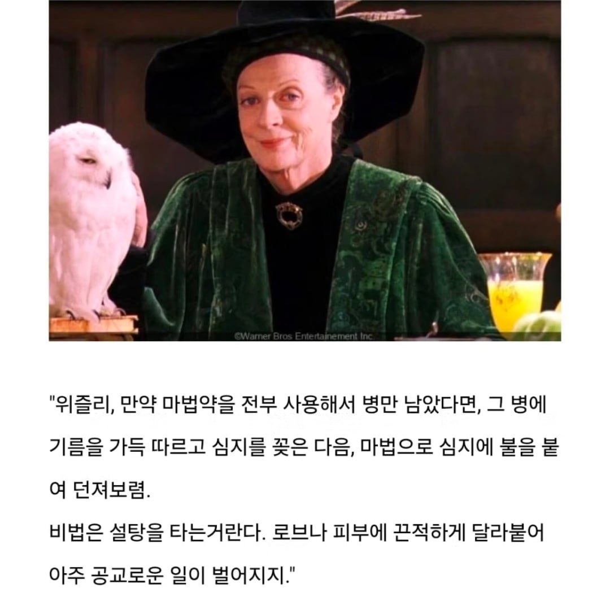
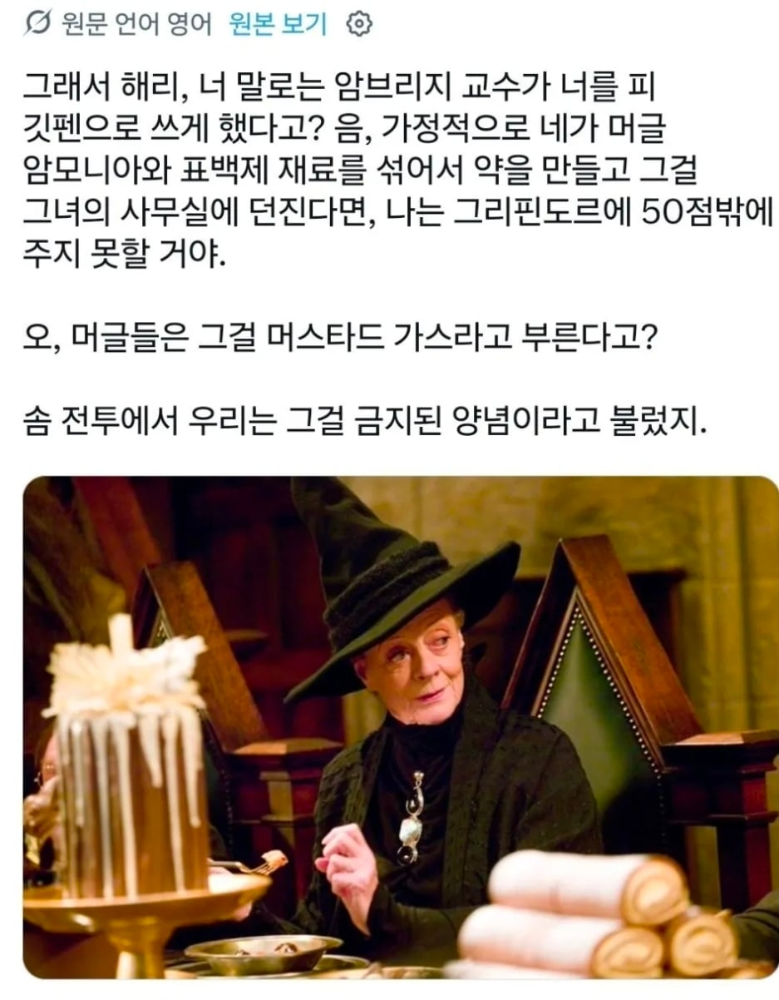
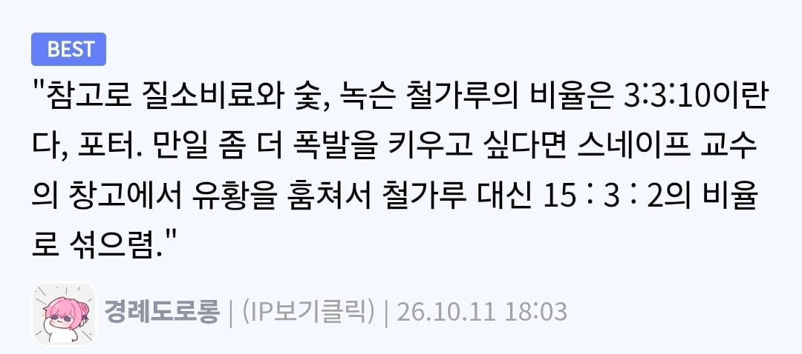
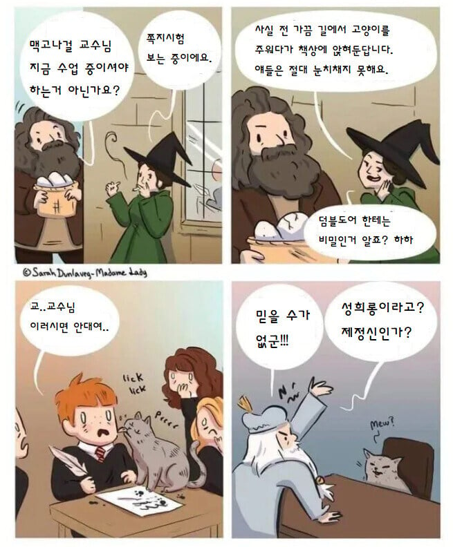

마법학교라 스티로폼이 없다네요
위즐리군 선행학습을 해오다니 분명 칭찬할만해요
하지만 적의 눈을 속이기 위해서 보다 보편적이고 두루쓰이는 재료를 보급해야한다는걸 알아두세요
스티로폼은 머글들에겐 필요한 소재지만 마법사들에겐 그닥 필요 없는 소재이기 때문에 저 같은 부류의 마법사에게 의심을 살 수도 있답니다
맥고나걸 어서오고
교장이 뭘 알아!

저거 한방 맞았으면 고통스러워서 볼드모트스스로 호크룩스 다깨부시고 자살했다 ㅋㅋㅋㅋㅋㅋ
몰로토프 칵테일 ㅋㅋ
고마워요 맥고나걸 교수님
머글인 저에게도 도움이 되는 지식이었어요
질소비료 숯 녹슨철가루 = 화약
맥고나걸이 헤르미온느한테 S.P.E.W. 운영 관해서 정보전달로 드롭-데드 방식 포스트 운용법 강의하던거 개웃겼는데 ㅋㅋㅋㅋㅋ
어디나옴??


네이팜 만드는법
택티컬 맥고나걸
가능할 것 같기도 하고 흠..
물론 질산비료15 숯3 유황2 순이란다 해리
숯은 부드러운나무로 만든게 가장 효과적이니 잊지마려무나
설탕보단 스티로품 녹이는게 정배 아님?